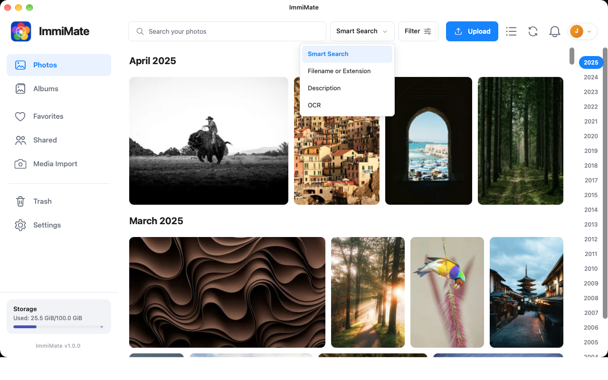
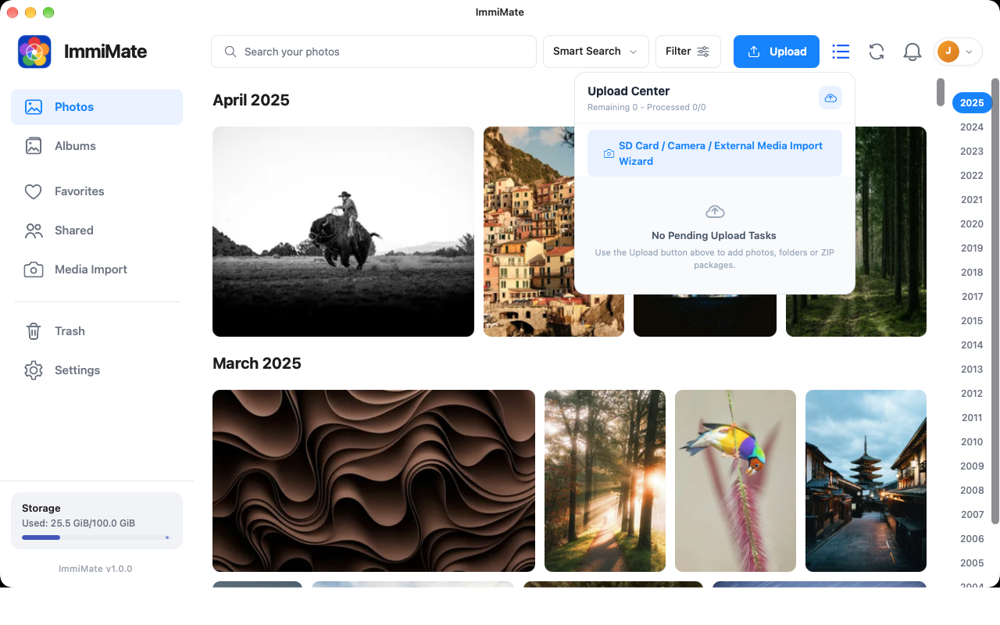
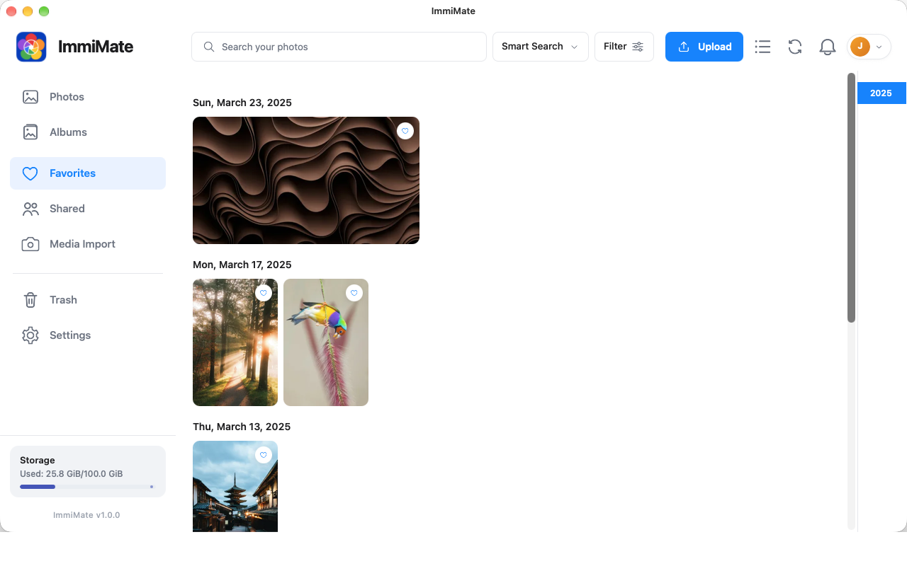
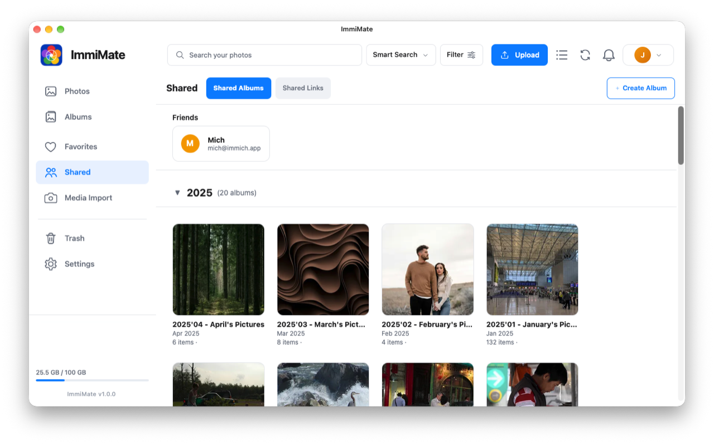
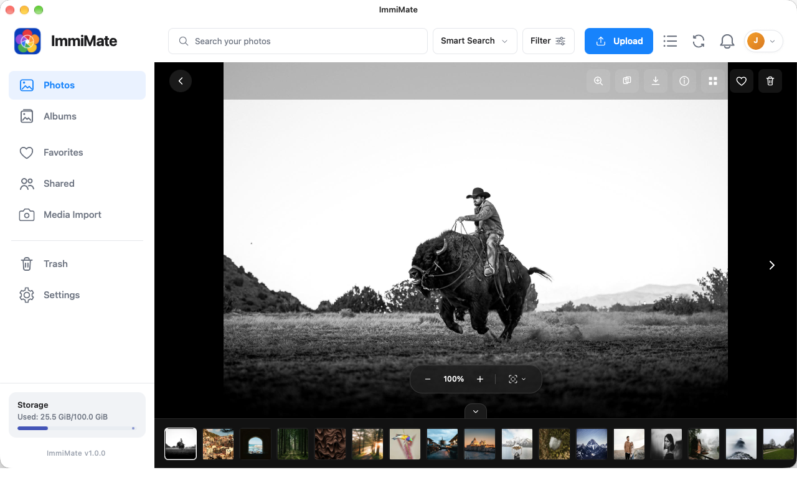
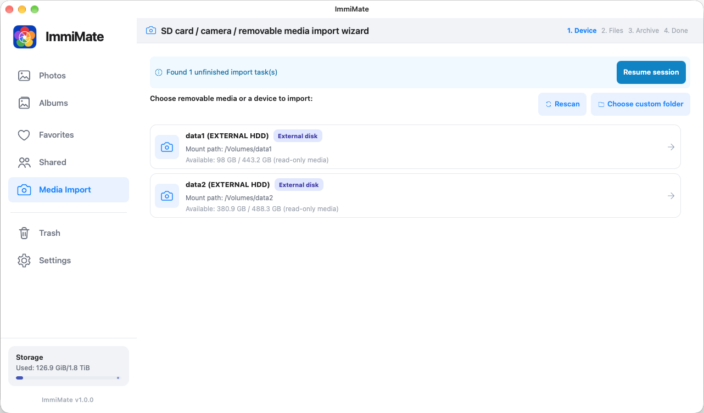
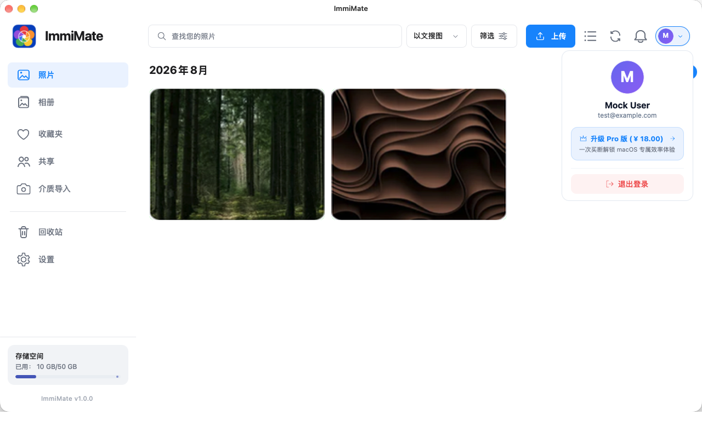
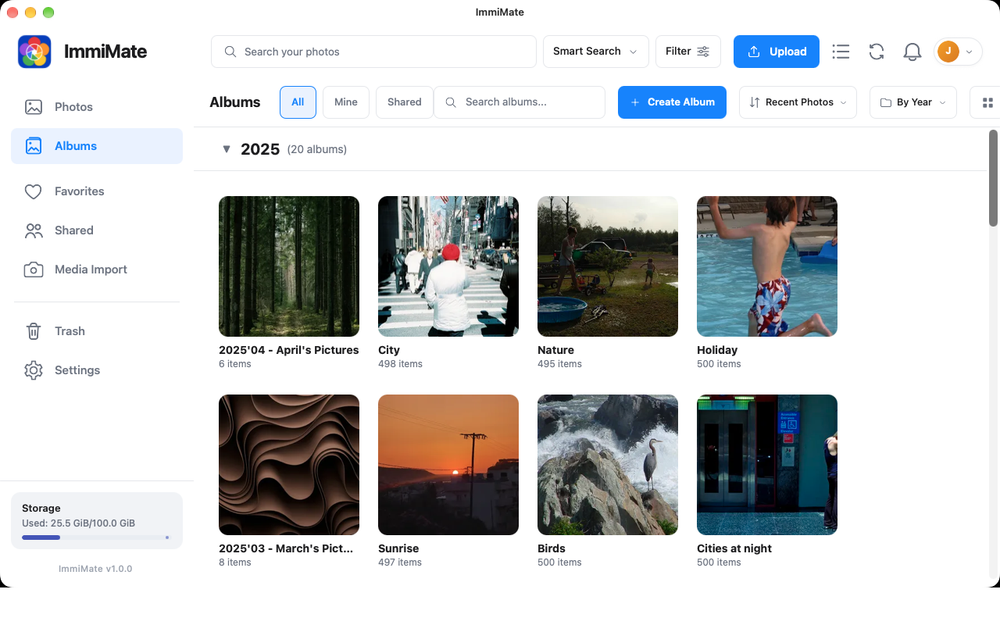
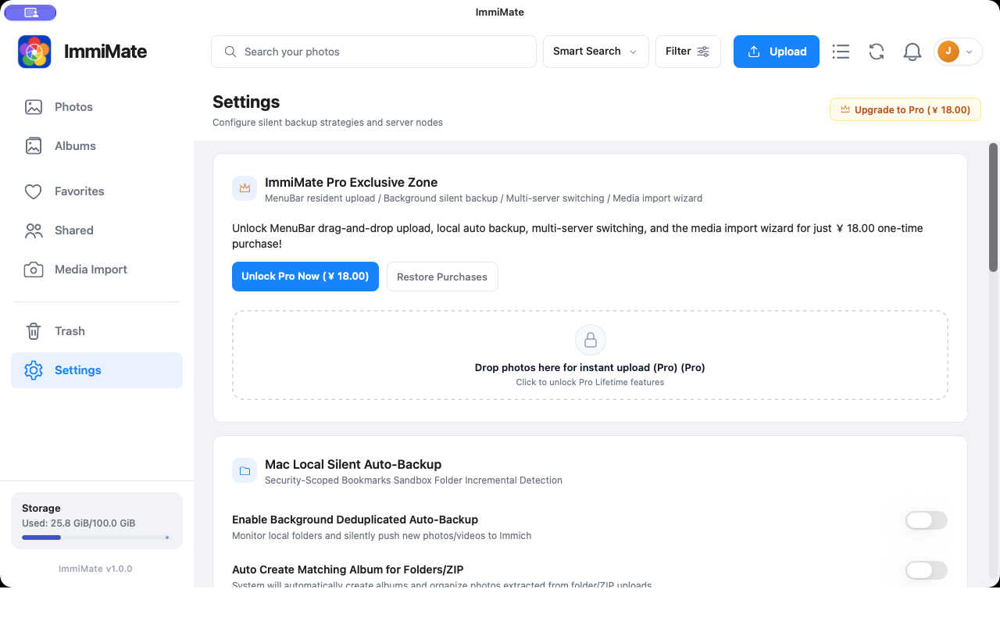
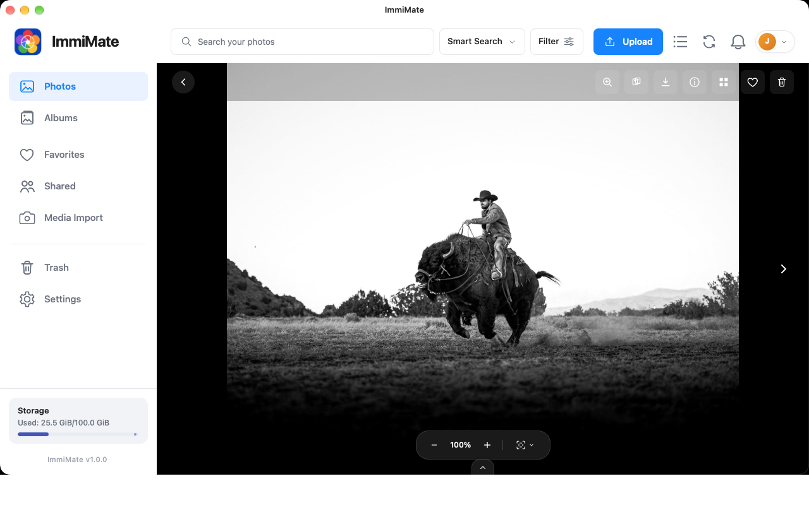

01
Find the right moment
Browse your timeline, albums, favorites, shared items, and trash. Search by filename, description, or OCR.
Explore searchNative macOS client for self-hosted Immich
ImmiMate gives your Immich library a focused desktop home for browsing, searching, sharing, uploading, and keeping a quiet local backup.

One focused desktop workflow
ImmiMate brings the everyday Immich tasks you actually use into a clean macOS workspace.
Browse your timeline, albums, favorites, shared items, and trash. Search by filename, description, or OCR.
Explore searchUpload photos, videos, folders, and ZIP packages with progress and duplicate checks. Download originals to a folder you choose.
See transfer toolsMonitor selected local folders, switch between server profiles, and keep your own archive close to the Mac you use every day.
Read support notesInside ImmiMate
From a quick search to a full import, the interface keeps the library in view and the action close at hand.









All ten product captures come from the current macOS Release build connected to the official Immich Demo. No local mock data or edited screenshots are used.
Privacy by design
ImmiMate is an independent client. Your photos, videos, server URL, and credentials move between your Mac and the Immich server you choose. There is no developer relay, advertising system, or behavioral tracking system.
Read the privacy policyDirect connection
Requests and media go to the server you provide.
Keychain storage
Server credentials use macOS Keychain protection.
Local control
Folder access and permissions stay under your control.
Ready when you are